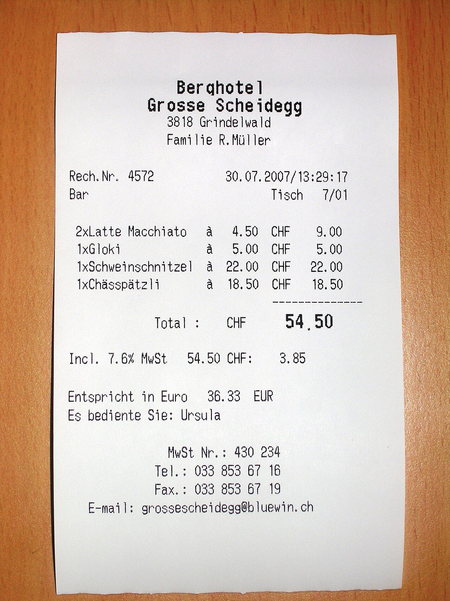
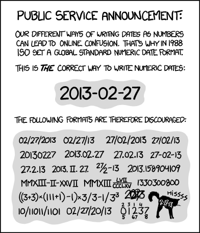
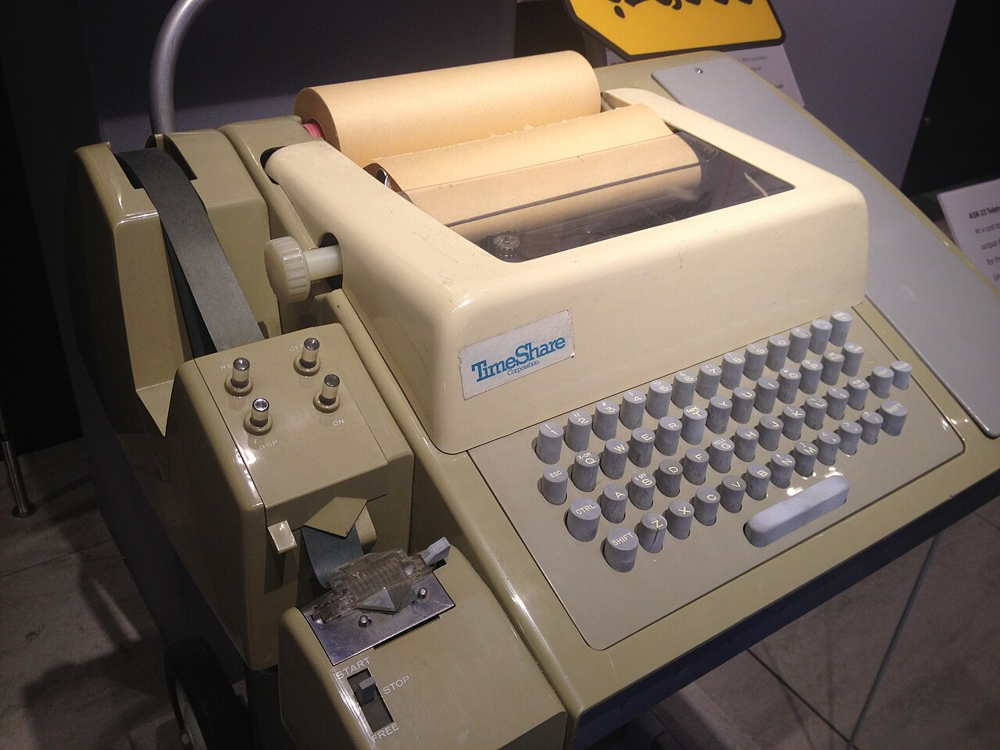
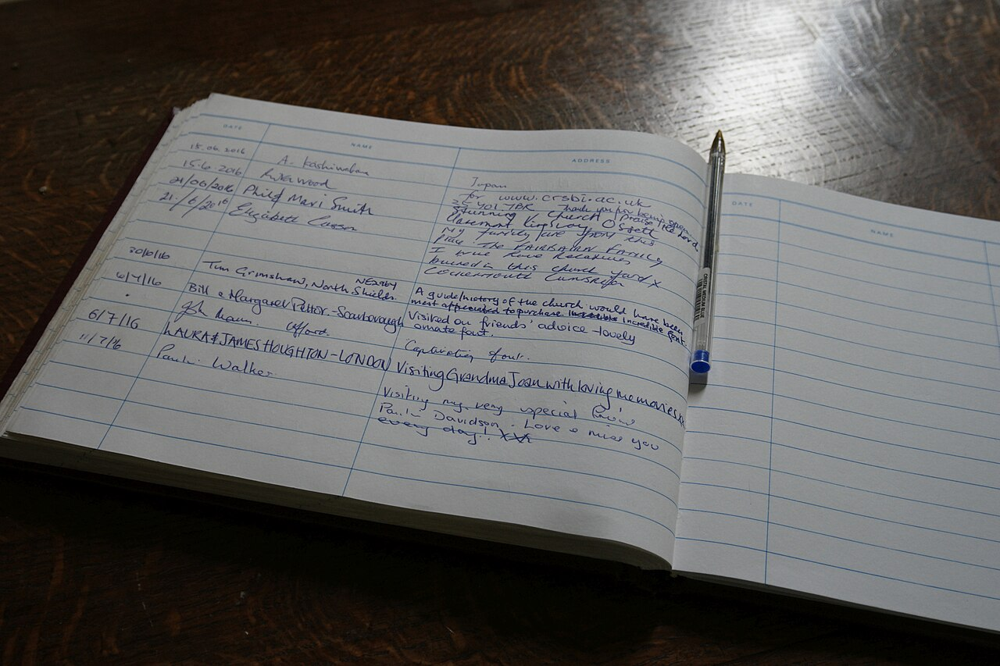
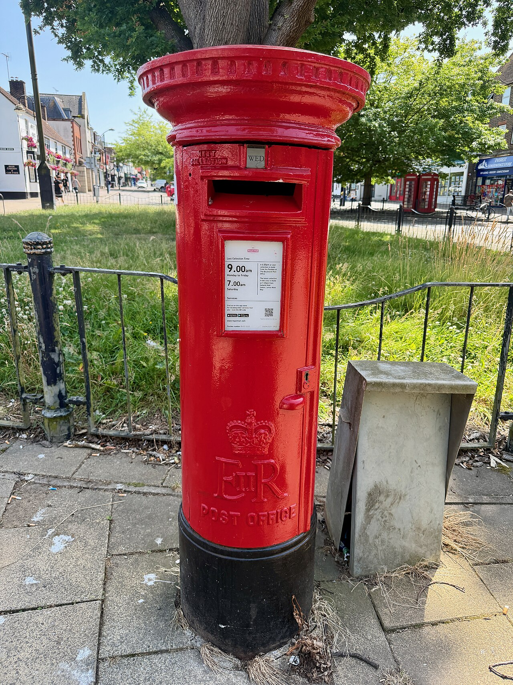
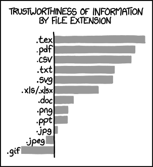
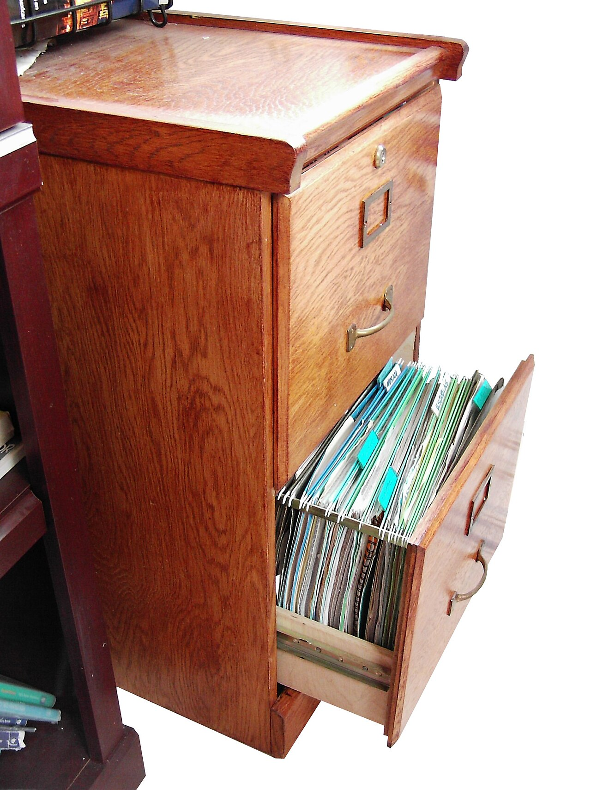
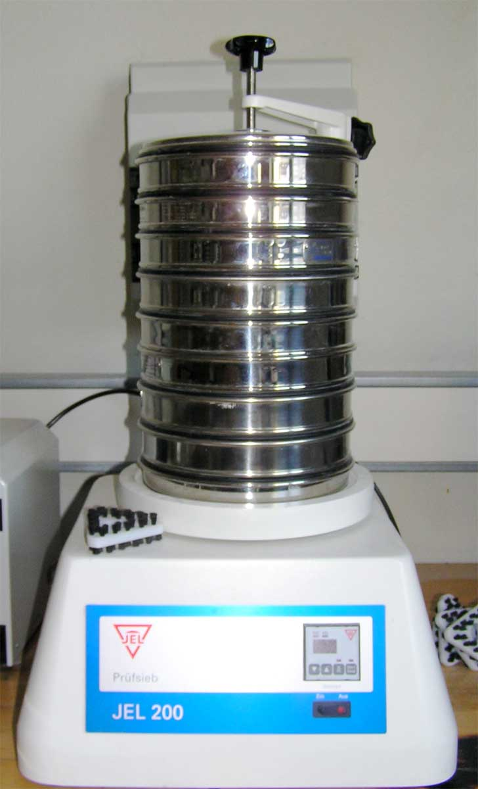
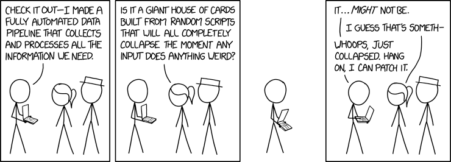

Writing Files and Reliable Reports
Choose a text format, write complete records, close resources, and check what a later reader receives. Separate computation from presentation so reports can be tested without depending on a real file.
The lecture, then the practice
Choose a section, or use the arrow keys in the section list. Hover or tap an underlined part of a program for its explanation. Run it, then use Edit to test a prediction of your own.
01Output is a data contract
1.1Write the format down first
A program reads exactly the characters you write. A person shrugs at a missing comma; a program does not. So output for a program is a promise: a format contract. Write it down first. For a marks file:
| Question | One possible answer |
|---|---|
| What does one line hold? | one student: name, then mark |
| Is there a header line? | yes, exactly name,mark, first |
| What separates the fields? | one comma, no spaces around it |
| How is a number written? | digits only: 85, not 85.0 or 85 marks |
| Which encoding? | UTF-8, so Nguyễn survives (Section 2) |
| How does each line end? | one \n, after every record, the last one too |
| What does “no students” look like? | the header line on its own |
Keep three jobs apart: calculate the values, format them as text, send the text (to the screen, memory or a file). A method that returns a string is easy to test.
Printed lists are for humans. Python shows ['Linh', 85]; Java shows an int[] as [I@ plus a hex number that changes each run. Build each record yourself, field by field.
NASA’s Mars Climate Orbiter was lost on 23 September 1999. A ground program wrote pound-force seconds where the file’s specification required newton-seconds, so the values were low by a factor of 4.45. The craft arrived about 170 km lower than planned. The board’s verdict: the specification, “which was not followed, defines both the format and units” of the file. Mishap Investigation Board, Phase I report (1999)
“Expect the output of every program to become the input to another, as yet unknown, program. Don’t clutter output with extraneous information.”
Doug McIlroy, with E. N. Pinson and B. A. Tague, foreword to the UNIX issue of the Bell System Technical Journal, 1978 Portrait: Denise Panyik-Dale, 2011 · CC BY 2.01.2print, println and write
Java’s print and Python’s write store exactly what you give them. Java’s println adds a line end. With write, you add "\n" yourself.
Java’s line end is the system line separator: \n on Linux and macOS, \r\n on Windows. A Python text-mode file on Windows also saves \n as \r\n (unless opened with newline=""). The Miscellaneous panel Two characters for one new line explains why.
"\n".join(records) leaves the last record without a newline, so a record appended later joins that line. End every record as you write it: println, or write(record + "\n").

println: the text and the line ending. print and Python’s write print only the text, so if nobody adds the newline, the next item lands on the end of the same line, and a program reading the receipt back line by line sees one item where there were two. Photo: Audrius Meskauskas ( Audriusa ), 2015 · CC BY-SA 3.01.3The same three moves in both languages
out is a PrintWriter in Java, and a text file or StringIO in Python.
| You want | Java (PrintWriter, System.out) | Python file or StringIO | Python print |
|---|---|---|---|
| text, no line end | out.print("Linh") | out.write("Linh") | print("Linh", end="") |
| text, then line end | out.println("Linh") | out.write("Linh\n") | print("Linh") |
| only a line end | out.println() | out.write("\n") | print() |
| a number | out.print(85) converts it | out.write(str(85)); write(85) is a TypeError | print(85) converts it |
| several values | out.println(name + "," + mark) | out.write(f"{name},{mark}\n") | print(name, mark, sep=",") |
| to a file | a PrintWriter on the file | the file object itself | print(..., file=out) |
Python’s print converts values to text, puts sep (a space) between them and end (a newline) after them.
1.4Reports for people: width, alignment, decimals
A report for people needs aligned columns. A format specifier sets a width (the minimum number of characters), an alignment and the decimals. Try them in the diagram A report for people: make the columns line up.
| Effect | Java printf / String.format | Python f-string | Result (| marks the edges) |
|---|---|---|---|
| text, left-aligned in 8 | %-8s | {name:<8} | |Linh | |
| whole number, right-aligned in 5 | %5d | {mark:>5} | | 85| |
| one digit after the point | %.1f | {avg:.1f} | |72.5| |
| width 6, one decimal | %6.1f | {avg:6.1f} | | 72.5| |
| line end | %n | \n |
A width never cuts a long value; it pushes the rest of the row right. Never pad files for programs: write Linh,85.
Java’s printf and String.format follow the computer’s locale (its country settings). A Vietnamese locale writes 72,5, which breaks a CSV file. For files, pass Locale.ROOT. Python f-strings always use a point (except the n type). See The locale can move the decimal point.
Where do the characters go? Step through both writers
Press Next to run one line at a time. The left box is the writer’s destination, a string in memory. Each ↵ is one newline. Watch which calls add one.
This interactive diagram needs JavaScript.
print, println, write: build the report yourself
Goal: store exactly two records, name,mark and Linh,85, each ending in a newline. Press the calls in any order. The reader on the right splits the text into lines, as a program would.
This interactive diagram needs JavaScript.
Same record, five formats: does the reader still understand?
The reader below never changes: it expects name,mark, one record per line. Choose how the writer formats the record. Every result comes from a real run.
This interactive diagram needs JavaScript.
A report for people: make the columns line up
The same three records, formatted for a person. A format specifier sets a column’s width (minimum characters), alignment and digits after the point. The | fences show whether columns line up. Every output is a real run.
This interactive diagram needs JavaScript.

02/03/2026 is 2 March to some readers and 3 February to others. Agree on the format of every field, not just the separators. xkcd 1179, ISO 8601 (2013) — Randall Munroe, CC BY-NC 2.5- The same writer methods, with memory as the destination.
- Write a complete line, including the line separator.
- Writes exactly these characters. No newline is added.
- Shows the stored string with quotes, so spaces and newlines are visible.
- A neutral locale: the decimal separator is always a point. Use it for anything another program will read.
- Vietnamese conventions use a decimal comma, as a person in Vietnam expects.
- This comma is the field delimiter.
%.1fprints one digit after the decimal separator, whatever that character is. - The reader finds three fields, not two: the decimal comma looks like a delimiter.
CSV was in use for decades before anyone wrote it down. RFC 4180, published in October 2005, opens by admitting that “there is no formal specification in existence, which allows for a wide variety of interpretations of CSV files.” It is only informational, not a standard, and it ends each record with CRLF: two characters, carriage return and line feed. Python’s csv.writer follows it, so its default line ending is "\r\n"; that is why the Section 3 example sets lineterminator="\n". RFC 4180 (IETF, 2005) Python csv: Dialect.lineterminator

Add a newline explicitly between the Python writes and inspect repr again. In Java, replace the first println with print and explain the malformed record.
02File modes, closing and error reporting

"a" in Python, new FileWriter(name, true) in Java. Write mode, "w", is a fresh book every time you open it: the old entries are gone before you write the first new word, even if you then write nothing. Pick the promise you mean before you open the file. Photo: Bob Harvey, 2016 · CC BY-SA 2.02.1Overwrite and append are different promises
Opening a file for writing decides what happens to its old contents. Choose on purpose: nothing warns you.
| You want | Python | Java 8 | File already exists | File missing |
|---|---|---|---|---|
| replace the contents | open(p, "w") | new PrintWriter(p, "UTF-8") | emptied at once | created |
| add at the end | open(p, "a") | new FileWriter(p, true) | kept; new text goes after it | created |
| create, never replace | open(p, "x") | Files.newBufferedWriter(path, StandardOpenOption.CREATE_NEW) | FileExistsError / FileAlreadyExistsException | created |
| read | open(p) | new BufferedReader(…) | read from the start | FileNotFoundError / FileNotFoundException |
Java 8’s FileWriter always uses the default encoding. To append in UTF-8, wrap new FileOutputStream(p, true) in an OutputStreamWriter with "UTF-8".
open(p, "w") and new PrintWriter(p) empty the file as they open it. So reading and writing the same file at once gives the reader nothing. Read and close first, then open for writing.
2.2Close before checking the saved result
A writer collects text in a buffer (a holding area in memory) and sends it to the disk in batches. Text reaches the file when the buffer fills, on flush(), or on close() (flush, then release the file). Before that, a reader may see an empty file. Like the post box: posted is not delivered.
Closing means the writer finished, not that the data is right. Read the file back to check.
Java loses any text still in a PrintWriter’s buffer when the program ends. Python usually flushes on a normal exit, but not on a hard crash. Use try-with-resources and with.

println and write drop text in, flush() is an extra collection, and close() is the last collection before the box is locked. Where it breaks: a real post box keeps your letter safe overnight; a program that crashes or forgets to close loses whatever is still in its buffer. Photo: Oleg Yunakov, 2026 · CC BY-SA 4.02.3Let the language close it: try-with-resources and with
Both languages close the file for you when a block ends, even when an exception ends it.
| Java | Python | |
|---|---|---|
| open, then close automatically | try (PrintWriter out = new PrintWriter(f, "UTF-8")) { … } | with open(p, "w", encoding="utf-8") as out: |
| closed when | the try block ends: normally, by return or by an exception | the with block ends, the same three ways |
| two resources | try (A a = …; B b = …), closed in reverse order | with open(a) as x, open(b, "w") as y: |
| push the buffer out now | out.flush() | out.flush() |
| flush after every line | new PrintWriter(writer, true): println, printf and format flush | print(…, file=out, flush=True) |
See it in the diagram An exception halfway through: who closes the file?
2.4When writing fails: exceptions and checkError
Writing can fail: a missing folder, no permission, a full disk.
| What goes wrong | Java | Python |
|---|---|---|
| the folder does not exist | new PrintWriter("no/such/dir/r.txt") throws FileNotFoundException, a checked IOException | open(…, "w") raises FileNotFoundError, a kind of OSError |
| no permission | also FileNotFoundException, with “Permission denied” in the message | PermissionError |
| a later write fails (disk full) | BufferedWriter.write throws IOException; PrintWriter.println throws nothing and sets an error flag | write, flush or close raises OSError |
println on a PrintWriter never throws, so a failed save looks fine. Before you report success, call checkError(). It flushes and returns true if any write failed.
catch (Exception e) { } and except: pass hide a failed save, and the user thinks the report exists. Catch the specific exception and report it, or let it reach a caller that can decide (Week 9).
2.5Name the encoding: UTF-8
A file stores bytes. An encoding is the rule that turns characters into bytes and back. UTF-8 handles every character: Nguyễn is 6 characters but 8 bytes, because ễ takes three. Decode with the wrong rule and you get mojibake: Nguyá»…n.
With no encoding named, Java 8 and Python before 3.15 use the system default, often not UTF-8 on Windows. Java 18 (JEP 400) and Python 3.15 (PEP 686) default to UTF-8, but not every computer runs them. Name it every time:
| Java | Python | |
|---|---|---|
| write | new PrintWriter(file, "UTF-8") | open(p, "w", encoding="utf-8") |
| read | new InputStreamReader(new FileInputStream(file), "UTF-8") | open(p, encoding="utf-8") |
Patrick McKenzie’s 2010 list Falsehoods Programmers Believe About Names includes “People’s names are written in ASCII” and “People’s names fit within a certain defined amount of space.” Your marks file must handle Nguyễn and An, Mai.
Overwrite or append? Choose the modes, predict, then watch the file
The program opens report.txt three times and writes one line each time. Choose each mode, predict the final line count, then step through. "w" and FileWriter(…, false) empty the file first; "a" and true add after it. The folder starts empty, so the first open always creates the file. This is the Python example above plus its Java twin.
This interactive diagram needs JavaScript.
The buffer: written is not the same as saved
A writer puts text in a buffer in memory first, then sends it to disk in batches. Choose how the program ends, then step through. Byte counts come from a real run.
This interactive diagram needs JavaScript.
An exception halfway through: who closes the file?
save writes one mark per line. Choose how it closes the file, and whether a bad mark "x" makes parseInt / int() throw. Watch the exception jump past the rest of save.
This interactive diagram needs JavaScript.
Step through: Java writes report.txt, then reads it back
The Java example below, line by line. The text waits in the buffer until the first try block closes the writer. Then readLine walks the file until it returns null.
This interactive diagram needs JavaScript.
- Write mode empties the existing contents.
- Append keeps the existing content and writes after it.
- PrintWriter records write errors instead of throwing them. Check explicitly.
- Decode the bytes as UTF-8 when reading back.
- Turns characters into the bytes a file stores, as
open(p, "w", encoding="utf-8")does on every write. - Eight bytes for six characters:
ễtakes three bytes in UTF-8, each ASCII letter one. - The same encoding gives the name back exactly: a successful round trip.
- Windows-1252, a common Windows default, reads the three bytes of
ễas three characters: mojibake.
Java’s own documentation for PrintWriter says: “Methods in this class never throw I/O exceptions, although some of its constructors may. The client may inquire as to whether any errors have occurred by invoking checkError().” So a full disk does not stop your program: like a warning light on a dashboard, the error is recorded and waits for you to look. The same page notes that, unless you ask for automatic flushing, println does not flush either. Java 8 API: PrintWriter
Run the file examples here or on Ed. Change append to write in the Python example, then read back the result. Describe exactly which previous content is retained.
03Delimited records and quoting
An, Mai is a sausage with a twist in the middle: split(",") cuts it in two. CSV’s answer is quotes: "An, Mai" says “no cutting in here”. Photo: Mutney, 2025 · CC BY 4.03.1A simple delimiter has a precondition
A delimiter is a character that ends a field. It is safe only if no value contains it. Check your real data:
| Delimiter | Safe when the values are | Breaks on |
|---|---|---|
comma , | numbers, codes, single-word names | An, Mai; 1,000; 72,5 with a decimal comma |
| tab | text typed into a form field | values pasted from a spreadsheet |
semicolon ; | numbers with a decimal comma | free text |
| quoted CSV | any text at all | only a reader that ignores the quoting rules |
“Names contain no commas” is fine for an exercise, if the contract says so. Real data needs a CSV writer and reader that understand quoting.
Java’s "Linh,85,,".split(",") drops trailing empty fields: 2 strings, where Python gives 4. Use split(",", -1). Its argument is a regular expression, so split("|") splits between every character and split(".") returns an empty array. Write split("\\|") or split("\\.").
3.2Round-trip what you produce
A round trip proves a format works: write the data, read it back with your real parser, and compare the values. Count the records in and out.
Python’s csv.writer quotes fields that need it; csv.reader removes the quotes. Every field comes back as a str. Open real files with newline="", or quoted newlines are misread (documentation). Java has no CSV parser in its standard library: quote by hand (see Quote a field by hand) and read with a library such as Apache Commons CSV or OpenCSV.
In October 2020, nearly 16,000 positive COVID-19 cases in England went unreported. Public Health England loaded CSV results into old .xls Excel templates that hold only about 65,000 rows (about 1,400 cases), and further cases were silently left off. Counting records in and out catches this. BBC News, 5 October 2020
85 returns as "85" and must be converted. Photo: A.Savin, 2021 · FAL3.3The two quoting rules of CSV
RFC 4180 gives CSV two quoting rules. Rule 6: “Fields containing line breaks (CRLF), double quotes, and commas should be enclosed in double-quotes.” Rule 7: a double quote inside such a field is written twice.
| Value | Written as | Why |
|---|---|---|
| Linh | Linh | nothing special |
| An, Mai | "An, Mai" | contains a comma |
| Bao "Ben" Tran | "Bao ""Ben"" Tran" | contains a quote: wrap the field, double the quote |
| an address over two lines | quoted, with the line break inside the quotes | contains a line break |
| (empty) | nothing between two commas: Linh,,85 | an empty field is still a field |
“TCP implementations will follow a general principle of robustness: be conservative in what you do, be liberal in what you accept from others.”
Jon Postel (editor), RFC 793, Transmission Control Protocol, 1981 Portrait: Carl Malamud · CC BY 2.0For files, keep the first half: be strict in what you write. The second half is debated. RFC 9413 (2023) notes that some interpretations of it “can negatively affect interoperability over time.” So reject a line you do not understand, with a clear message (Week 9).
3.4Named columns and CSV in both languages
Python’s csv.DictWriter and csv.DictReader use named columns, so row["mark"] still works if columns move. In Java, find each column’s position from the header once; do not hard-code parts[1].
| Task | Java (standard library only) | Python |
|---|---|---|
| write a field that may contain a comma | your own quoting method | csv.writer(out).writerow([name, mark]) |
| write rows with a header | println("name,mark"), then one line per record | csv.DictWriter(out, fieldnames=["name", "mark"]), writeheader() |
| read simple, comma-free fields | line.split(",", -1) | line.rstrip("\n").split(",") |
| read real CSV | a library | csv.reader(f) or csv.DictReader(f) |
| numbers in the fields | Integer.parseInt(parts[1]) | int(row["mark"]) |
Round-trip one record named Bao "Ben", Nguyễn. If it comes back unchanged, your writer, reader and encoding agree.
Cut at every comma: when does the name survive?
Left: the Java method joins name and mark with a comma, and split(",") cuts at every comma. Right: Python’s csv quotes a field when needed, and its reader understands quotes. Pick or type a name and count the fields that come back.
This interactive diagram needs JavaScript.
Round trip: write CSV, rewind, read it back
The Python CSV example, line by line. The ▲ is the stream’s position: writing moves it forward; reading starts from it. Then try the version that forgets to rewind.
This interactive diagram needs JavaScript.

- Returns the text instead of choosing where to write it.
- The caller decides: screen or file.
- The CSV writer quotes a field that contains a comma.
- Rewind the stream before reading back.
- With no limit, Java drops every empty string at the end. Python’s
"Linh,85,,".split(",")keeps all four fields. - A negative limit keeps trailing empty fields, so fields = delimiters + 1.
- The empty last field (a missing mark) vanishes:
noMark[1]would throwArrayIndexOutOfBoundsException.
- RFC 4180: quote a field only if it holds a comma, a double quote or a line break.
- Ordinary values are written unchanged, as Python’s
csv.writerdoes by default. - Double every quote inside the value, then wrap the field in quotes.
- Only the text field is quoted. A number never contains a comma.
Spreadsheet software reads SEPT2 and MARCH1, which are names of human genes, as dates: 2-Sep and 1-Mar. A 2016 scan of leading genomics journals found the error in 704 of 3,597 papers that had supplementary Excel gene lists: 19.6%. The fix came from the other side: in 2019 the HUGO Gene Nomenclature Committee renamed the genes (MARCH1 became MARCHF1, SEPT1 became SEPTIN1), and its 2020 guidelines give Excel’s date conversion as the reason. The gene on this calendar page, MARCH4, is now MARCHF4. A reader that guesses what your text means is a broken round trip. Ziemann et al., Genome Biology (2016) Bruford et al., Nature Genetics (2020) HGNC record for MARCHF4
Try a name containing a comma, then a quote. Explain why a parser must understand quoting before it can decide where one field ends.
04Documents, summaries and repeatable tests
4.1Choose a format that represents the structure
A CSV line is flat: a fixed list of fields. JSON has structure built in: objects with named fields, arrays, strings, numbers, true/false and null, nested as deep as you need. So one record can hold a list of marks.
Valid JSON is not yet a valid report. {"name": "Linh"} has no marks; {"marks": ["x"]} has a mark that is not a number. Check fields, types and ranges right after parsing.
JSON keys are always strings, so Python keys 1 and 2 come back as "1" and "2". A tuple comes back as a list. Compare the restored data with the original, as A JSON round trip is not always the same data does.

{"name": "Linh", "marks": [85, 90]} is a folder labelled marks with two papers inside. A flat name,mark line would need a home-made rule for that. Where it breaks: a cabinet does not check what you file. A folder can be missing, or hold the wrong paper, and a parsed document is the same, so validate after parsing. Photo: Pptudela at English Wikipedia, 2006 · CC BY-SA 3.04.2JSON types in Python and Java
Each JSON type has a Python partner. Java needs a library.
| JSON | Python after json.loads | Java |
|---|---|---|
object {"name": "Linh"} | dict | with a library: a Map or your own class |
array [85, 90] | list | a List or an array |
string "Linh" | str | String |
number 85, 72.5 | int, float | int, double |
true, false, null | True, False, None | true, false, null |
Python has json built in. Java SE has no JSON parser, so projects add Jackson or Gson. Useful json.dumps options:
indent=2: readable for people.sort_keys=True: the same data always gives the same text.ensure_ascii=False: keepsNguyễn, notNguy\u1ec5n.
JSON exchanged between systems “MUST be encoded using UTF-8” (RFC 8259, 2017).
4.3Test a pipeline in layers
Test each layer on its own: calculate, format, write, read back. A failure then shows where to look, like the stack of sieves in the photo.
Tests need repeatable output: same input, same characters, every time. Keep out the clock, random numbers, the order of a Java HashMap or a Python set of strings, and the locale. Sort, pass Locale.ROOT, use sort_keys=True.
Compare the whole text; “it ran” is not a test. Write into a StringWriter or StringIO, compare with the exact expected string, and print repr on failure. See Test the report, not the screen.
Memory tests are fast and repeatable. Add one test that writes a real file on Ed and reads it back: only it checks the working directory, file mode and encoding.

4.4A test list for a report
Choose the inputs most likely to expose a bug:
| Test input | Why this one | Expected |
|---|---|---|
[85, 49, 50] | ordinary data, including the boundary | count 3, passed 2 |
[50] | exactly on the pass mark | passed 1, not 0 |
[] | no data at all | the header and 0,0, or the error your contract chose |
| a name with a comma or a quote | quoting | the same name after a round trip |
a last line without \n | the reader’s edge case | the record is still read |
| the program run twice | the file mode | one copy with "w", two with "a" |
The first five run in memory; the last needs a real file.
JSON round trip: data → text → data, then check it
Step through dumps (data to text) and loads (text to data). Then pick a document that is valid JSON but wrong for a mark report, and see why you must validate what you parse.
This interactive diagram needs JavaScript.
Test the pipeline layer by layer: pick a test input
A report has three layers: calculate, format, write. Pick a test input and step through. The boundary 50 and the empty list are most likely to expose a bug.
This interactive diagram needs JavaScript.

- Turns the data into text in a defined format, not display text.
- Parses the text back into data, so you can check the values.
- The pass boundary includes exactly 50.
- Build the record in the header’s field order.
- A dictionary with
intkeys. JSON keys can only be strings. dumpssilently turns the keys into"1"and"2", and the tuple into an array.- Not equal to the original, so a round-trip test catches the change.
- After the round trip, use the string key.
restored["marks"][1]would raiseKeyError.
- The bug: a mark of exactly 50 should pass. Only a boundary test notices.
- The report writes to any destination, so a test can pass a memory stream instead of a file.
- Compare the whole text, newlines included, not just “it ran”.
- On failure, show the exact characters,
\nincluded. - The boundary test fails and points at the comparison. Change
>to>=and run again.
Change the marks to an empty array or list. Decide which summary fields still have a meaningful value and which calculations would require an explicit empty-input policy.
05Coding exercises
These are new practice tasks for this website. Read the input and output contract, complete the starter, then run the tests. They are not assessment submissions.
06Team activity
Write a format contract
Design a marks report with names containing commas. Specify encoding, columns, quoting and how empty data is represented. Have another group parse a sample using only the written contract.
Test overwrite versus append
Start with one record, then run a writer twice. Explain the result for overwrite and append. Propose a read-back test that detects the wrong mode instead of checking only that no exception was raised.
Break my parser
Partner A writes five marks records designed to break a reader: a comma inside a name, a double quote, a Vietnamese name, an empty mark, a last line with no newline. Partner B predicts, for each line, how many fields split(",") returns in Java, in Python, and what csv.reader returns. Run all three on Ed and score one point per correct prediction. Swap roles, then write one sentence for your format contract that would have prevented each surprise.
07Quiz
Predict the behaviour before running a program. Answer every question, then grade to see explanations. Nothing here is recorded or submitted.
08Further reading
The Ed lessons below provide the course material behind this page. The worked examples, activities and practice questions here are newly written adaptations.
Basic File I/O in Java
Read the lesson and trace its examples on Ed.
edstem.orgCourse source / referenceBasic File I/O in Python
Read the lesson and trace its examples on Ed.
edstem.orgCourse source / referencePrintWriter API
Writing, flushing and checkError.
docs.oracle.comCourse source / referencePython CSV
Readers, writers, quoting and newline handling.
docs.python.orgCourse source / referencePython JSON
Serialising and parsing structured text.
docs.python.orgPhotographs
From Wikimedia Commons, reused under the licence each one names. Author and licence come from the Commons API rather than from anyone’s memory — see media/fetch-photo.py.


Comics
| Comic | Source |
|---|---|
| xkcd 1179 | ISO 8601 (2013) — Randall Munroe, CC BY-NC 2.5 |
| xkcd 1301 | File Extensions (2013) — Randall Munroe, CC BY-NC 2.5 |
| xkcd 2054 | Data Pipeline (2018) — Randall Munroe, CC BY-NC 2.5 |
M1Java and Python, side by side
Reference only: this week in both languages. Java column: Java 8, standard library.
Writing text
| Idea | Java | Python |
|---|---|---|
| text without a line end | out.print("Linh") | out.write("Linh") |
| text and a line end | out.println("Linh") | out.write("Linh\n") or print("Linh", file=out) |
| formatted | out.printf(Locale.ROOT, "%-8s%5d%n", name, mark) | out.write(f"{name:<8}{mark:>5}\n") |
| write to memory | new PrintWriter(new StringWriter()) | io.StringIO() |
| get the stored text | buffer.toString() | buffer.getvalue() |
Opening and closing files
| Idea | Java | Python |
|---|---|---|
| replace | new PrintWriter(file, "UTF-8") | open(p, "w", encoding="utf-8") |
| append | new FileWriter(p, true) | open(p, "a", encoding="utf-8") |
| create, never replace | Files.newBufferedWriter(path, StandardOpenOption.CREATE_NEW) | open(p, "x", encoding="utf-8") |
| close automatically | try (PrintWriter out = …) { … } | with open(…) as out: |
| flush now | out.flush() | out.flush() |
When things go wrong
| Idea | Java | Python |
|---|---|---|
| cannot open the file | FileNotFoundException (checked: catch or declare) | FileNotFoundError, PermissionError (both OSError) |
| a write fails | IOException; but PrintWriter only sets a flag | OSError |
| did any write fail? | out.checkError() | not needed: failures raise |
Formats
| Idea | Java | Python |
|---|---|---|
| split a simple line | line.split(",", -1) | line.rstrip("\n").split(",") |
| real CSV | no standard library support: quote by hand, read with a library | csv.writer, csv.reader, DictReader; open with newline="" |
| JSON | no standard library support: a library such as Jackson or Gson | json.dumps, json.loads |
line end of println / text mode | System.lineSeparator() | \n, turned into os.linesep in text mode |
M2Two characters for one new line
M2.1A typewriter with two jobs
On a teleprinter such as the Teletype Model 33 (the machine in the Section 1 photo), a new line took two movements. Carriage return moved the print head back to the left edge. Line feed rolled the paper up one line. ASCII gave each a code: CR is 13 (\r) and LF is 10 (\n). The return was slow, so CR went first, and machines were often sent extra padding characters to give the head time.
Operating systems split into three camps and never fully reunited:
Two characters, like the teleprinter
Systems that drove a Teletype directly stored both codes. So did most DEC minicomputer systems, CP/M and MS-DOS. Windows still does.
One character, translated on the way out
Multics (begun in 1964) stored only LF and let a device driver send what the printer needed. Unix followed, and so do Linux and macOS.
The odd one out
The Apple II and classic Mac OS used CR alone. Mac OS X, built on Unix, switched to LF.
Notepad learns LF
Windows Notepad showed a Unix file as one long line until Microsoft added LF and CR support in 2018 (Microsoft announcement).
Source for this history: Wikipedia, “Newline”, History and Representation.
M2.2What it means for your files
| Where | What ends a line |
|---|---|
Java println | the system line separator, System.lineSeparator(): \n or \r\n |
Java print("…\n") | exactly \n, on every system |
Python text-mode write("\n") | \n on Linux and macOS; \r\n on Windows (unless opened with newline="") |
Python csv.writer | \r\n by default, as RFC 4180 says, unless you set lineterminator |
reading: Java readLine(), Python text mode | all three styles are recognised, and the line end is removed (Java) or turned into \n (Python) |
That is why the CSV example sets lineterminator="\n" and opens its stream with newline="": the bytes, and so a test’s expected output, are the same on every computer.
Read, practise, explain
Finish the output and resource-management sections of both I/O lessons. Run the memory and real-file examples here, then try the file examples on Ed too.
These pages follow the topic sequence in Canvas Subject Schedule and the Ed lessons. Some topics were introduced earlier on this website, so Week 6 consolidates Week 5 before collections. Use current announcements and Canvas assignments for deadlines. Practice here is independent of graded labs, code comprehension, assignments and exams.